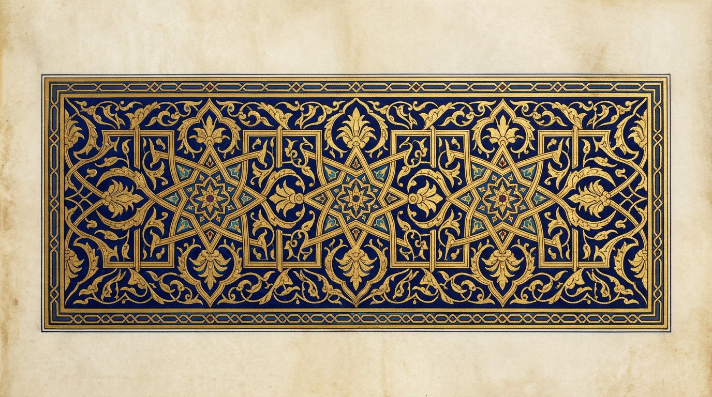
كتاب أسرار وخفايات في علم الروحانيات
Terjemah Indonesia atas naskah Syeikh ʿAṭiyyah ʿAbd al-Ḥamīd
Setiap rajah dari naskah diletakkan di bawah keterangan babnya.
0 Catatan atas naskah yang Anda berikan
Ekstrak pertama (cf70ec0) 99 lembar, kira-kira hlm. 1–195.
Ekstrak kedua (a8b761e, repo asror-wa-khofiyyat) Picture 100–149, hlm. 196–297 termasuk fihris.
Judul pada sampul:
كتاب أسرار وخفايات في علم الروحانيات · تأليف وتجميع شيخ الروحانيين الشيخ عطية عبد الحميد · قدّس الله سرّه
Isi naskah, dari halaman 2 sampai hampir akhir, didominasi aʿmāl al-maḥabbah wa al-jalb wa at-tahyīj: azimah agar orang datang, tidak makan, tidak tidur, hatinya “dicuri”, rajah dimasukkan ke makanan, rambut, pakaian, dan roti. Ada pula ṭilasm untuk sakit, kelesuan, mengikat lidah, dan membuat orang “seperti gila sampai mati”.
Yang kami turunkan penuh: susunan kitab, terjemah judul setiap masʾalah, reproduksi rajah dari foto naskah, dan lampiran ilmu huruf/awfāq yang tidak berisi menyakiti orang.
Sampul Halaman 1
الغلاف

Rajah sampul naskah — Kitab Asrār wa Khafiyyāt fī ʿIlm al-Rūḥāniyyāt.
Halaman 2 naskah adalah daftar terbitan lain penyusun, lalu judul fasal pertama.
Fasal I Amalan mahabbah, jalb, dan tahyīj
الفصل الأول في أعمال المحبة والجلب والتهييج
Ini fasal pembuka naskah (hlm. 2). Di bawah ini setiap masʾalah diterjemahkan judulnya; rajah asli menyusul di bagian berikutnya.
Masʾalah 1 — Keakraban suami-istri rumus ditahan
باب الألفة بين الرجل وزوجته
Naskah (hlm. 3) menyuruh menulis nama-nama pada dua puluh daun jeruk, lalu meminumkannya. Tujuannya agar salah satu pihak “mencintai dengan cinta yang sangat”. Ini memasukkan tulisan ke minuman orang — tidak kami terjemahkan langkahnya.
Masʾalah 2 — Mahabbah dan tahyīj yang “lembut” rumus ditahan
باب محبة وتهييج لطيف
Ditulis pada pita dari pakaian orang yang dituju, atau pada makanan, minuman, atau yang dihidu, diulang 72 kali dengan bakhoor. Memakai athar (bekas) orang tanpa izin.
Masʾalah 3 — Tahyīj rumus ditahan
باب تهييج
Hlm. 4: ditulis pada pecahan tembikar hari Selasa saat matahari terbit, dibakar 21 kali. Azimah hlm. 4–5 berisi “mencuri hati Fulanah binti Fulanah”, menahan tidur, dan memanggil waswās serta khannās. Tidak diterjemahkan sebagai amalan.
Masʾalah 4 — Wafak tujuh kertas
باب آخر مثله · الوفق في سبع أوراق
Hlm. 5–7: wafak 3×3 (pola Budūḥ 4-9-2 / 3-5-7 / 8-1-6) ditulis pada tujuh kertas, dibakar berurutan. Rajahnya ada di bawah.
Masʾalah 5–9 — Tahyīj untuk kehadiran; mahabbah pada pohon, henna, dan athar
Hlm. 7–11. Termasuk menulis Surah al-Humazah pada lilin Iskandariyyah (masʾalah 6), menggantung kertas pada pohon timur (masʾalah 7), dan menulis pada athar atau pacar India (masʾalah 8) dengan perintah agar orang “tidak makan, tidak minum, tidak tidur sampai datang sebagai hamba yang tunduk”.
Masʾalah 15–16 — Tujuh kertas + adonan kuda
Hlm. 20–21. Tujuh kertas dibakar satu-satu “hingga yang dituju hadir hilang akal”. Masʾalah 16 membentuk adonan menyerupai kuda. Azimah berisi “tidak makan tidak minum tidak tidur”.
Rajah dari fasal I — di bawah keterangan
Berikut rajah sebagaimana tertera pada naskah, diletakkan setelah penjelasan di atas.

Hlm. 4–5. Kanan: azimah tahyīj. Kiri: rajah empat baris pada syaqfah (pecahan), lalu azimah “wahai arwāḥ rūḥāniyyah”.
Rajah — wafak 3×3 Budūḥ (hlm. 7)
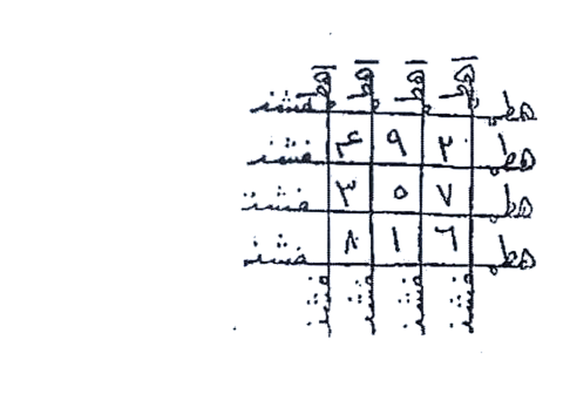

Hlm. 10–11. Azimah jalb (kanan) dan masʾalah 9 mahabbah-jalb pada athar atau kain linen (kiri).

Hlm. 20–21. Masʾalah 15 (tujuh kertas + lada) dan masʾalah 16 (adonan).
Hlm. 30–51 Fawāʾid, segitiga 693, mahabbah dalam makanan
ومن الفوائد الجليلة للمحبة والجلب · محبة يوضع في الطعام
Hlm. 30–31 menyebut “fawāʾid yang agung”, boneka, dan bāb maḥabbah wa jalb wa ʿaṭf bayna al-marʾah wa zawjihā dengan mutsallats bernilai 693, digantung pada sībībah, ism aʿẓam 1111. Naskah bilang “baik untuk khair atau syarr” — sisi syarr tidak kami turunkan.

Hlm. 30–31. Kanan: boneka dan huruf jīm. Kiri: mutsallats 693 dan ism 1111.
Hlm. 40–41: “mahabbah ʿajībah” memakai tiga helai rambut orang yang dituju dimasukkan ke tengah kertas Al-Fātiḥah. Di halaman yang sama penyusun menulis faedah mahabbah “pada yang halal”, dan bahwa pemakaian pada yang haram tidak boleh.

Hlm. 40–41. Kiri atas: rajah figur manusia dengan angka. Bawah: mahabbah ʿajībah (rambut) dan catatan ḥalāl/ḥarām.
Hlm. 50–51: azimah panjang agar orang datang ke suatu tempat, lalu maḥabbah yūḍaʿ fī aṭ-ṭaʿām — rajah dibakar, abunya ditaruh di makanan “orang yang memakannya menjadi sibuk dengan cinta, tidak sabar”. Ini meracuni makanan orang. Rumus dan huruf talismannya tidak diterjemahkan.

Hlm. 50–51. Kiri: rajah belah ketupat/segitiga; di bawahnya “mahabbah ditaruh dalam makanan” dengan baris huruf.
Hlm. 60–71 Syabāz, rajah wajah, ism al-Wadūd
باب محبة من الأسرار · محبة مجربة وصحيحة
Hlm. 60: huruf berulang (ʿayn, fāʾ, ṭāʾ, ḥāʾ…) lalu “bāb maḥabbah min al-asrār”. Dua syabāz (wajah) digambar pada kertas merah, daʿwah jaljalūtiyyah 21 kali. Hlm. 61: “gambar dua syabāz ini, wahai ṭālib.”

Hlm. 60–61. Kanan: deret huruf. Kiri: rajah wajah/syabāz.
Hlm. 70–71: wafak 3×3 berisi huruf, empat kertas dibakar berurutan; lalu amalan atas ism ودود dengan biji gandum. Nomor telepon penyusun tercetak di naskah — itu iklan, bukan bagian ilmu.

Hlm. 70–71. Kanan: wafak 3×3. Kiri: empat kotak bernomor 1–4, lalu amalan Wadūd.

Hlm. 90–91. Tiga figur “aṭ-ṭālib / al-maṭlūb”, wafak 4×4 huruf, dan khātam pada kertas zaitun.
Hlm. 110–129 Taṣrīf dan daʿwah
التصريف الرابع والعشرون وما بعده
Hlm. 110: khātam lingkaran berbintang (segel) pada tujuh kertas; naskah bilang orang yang dituju “hadir sebagai hamba hina, tidak mampu berpaling sekejap mata”. Hlm. 111 taṣrīf 26: ṭilasm pada roti, diberikan kepada anjing di luar negeri — “yang dikenai menjadi seperti orang gila, tidak tenang, sampai mati”. Ini sihir mudarat. Tidak diterjemahkan langkahnya.

Hlm. 110–111. Kanan: khātam lingkaran berbintang. Kiri: baris ṭilasm dan taṣrīf roti.
Hlm. 128–129: daʿwah panjang memanggil malaikat dan nama-nama Suryani (Syamakh, Bārūkh, ʿAzriyāl, dll.) untuk “menghadirkan” dan menundukkan jin. Ini qosam, bukan doa biasa.

Hlm. 128–129. Daʿwah dan zajr.
Hlm. 168–169 Ṭilasm sakit, nafkh, mengikat lidah
الطلاسم الثالث والعشرون إلى الخامس والعشرين
Ṭilasm 24: nafkh (tiupan) ke arah pencuri, pada kirbat. Ṭilasm 25: mengikat lidah hakim agar tidak berbicara kecuali baik. Rajah hurufnya tampak pada naskah.

Hlm. 168–169. Ṭilasm 23–25 dengan baris huruf rahasia.
Hlm. 148–149 Hijab penglihatan, rezeki, ruqyah, pencurian
حجب الأبصار · بركة الرزق · الكشف عن السرقة · علاج المصروع
Hlm. 148 merangkum beberapa hajat dengan “asmāʾ Suryāniyyah” yang sama. Sebagian menuntut menyembelih katak — itu tidak kami turunkan. Dua perkara yang lebih dekat kepada doa:
Bakhoor “untuk kebaikan” menurut naskah: jāwī, lubān dzakar, k suciander, ʿanbar, ʿūd qāqulī. Yang “untuk syarr”: ṣabr, mur, ḥiltīt, kibrit, ʿāmūd — kami sebut agar dikenali, bukan agar dipakai.

Hlm. 148–149. Hijab, rezeki, pencurian (kanan); ruqyah ṣarʿ dan bakhoor (kiri). “Tammat at-taṣārīf.”
Hlm. 186–187 Daʿwah Ibrāhīm ad-Daylī
دعوة ابراهيم الديلي
Hlm. 186 kembali mencetak daftar kitab penyusun. Hlm. 187: daʿwah ini “bertaṣarruf pada khatf (menyambar) dan tahyīj”. Naskah menyebut ayam jantan putih, khātam pada sayap, dibaca sampai ayam mati. Itu menyakiti hewan untuk sihir. Tidak diterjemahkan sebagai amalan.

Hlm. 186–187. Kiri bawah: khātam besar daʿwah Ibrāhīm ad-Daylī (al-ism al-kabīr, al-munīr, aẓ-ẓāhir, an-nūr aẓ-ẓāhir).
Hlm. 194–195 Qasam al-ʿAmmārī
دعوة القسم العماري
Naskah menukil dari kitab al-Asrār karya asy-Syeikh Muḥammad ibn al-Basyīr ibn al-Ḥājj al-Maghribī as-Sūsī. Qasam ʿAmmārī disebut qasam muṭlaq, banyak nama dan juzʾ, “tidak terhitung faedahnya”, dihubungkan kepada Malik al-Khallāq dan pelayanan kepada raja-raja jin. Hlm. 194 memuat syair qosam (“yā ṭayhūb anaka dzū al-maqāmiʿ…”). Hlm. 195: hikayat mencari qasam ini sampai negeri Sudan, dengan wasiat menyembunyikannya.

Hlm. 194–195. Qasam ʿAmmārī dan hikayat as-Sūsī / Khurṣān.
Fihris Delapan fasal naskah (hlm. 296)
فهرس كتاب أسرار وخفايات في علم الروحانيات
Ini daftar isi yang tercetak di penghujung naskah. Terjemah harfiah:
| Fasal | Isi | Halaman naskah |
|---|---|---|
| I | Jalb, tahyīj, dan mahabbah | 2–94 |
| II | Taṣrīf daʿwah jāmiʿah dan cabang-cabangnya | 95–148 |
| III | Taṣrīf empat puluh ṭilasm dan daʿwah khususnya | 149–176 |
| IV | Daʿwah-daʿwah rūḥāniyyah yang agung | 150–212 |
| V | Faedah mandil dan cara membuatnya | 213–228 |
| VI | Menarik pelanggan, menikahkan yang belum laku, dan membuka ʿukūs | 229–238 |
| VII | Amalan mengirim hātif | 239–251 |
| VIII | Awfāq | 252–291 |

Hlm. 296–297. Kanan: fihris delapan fasal. Kiri: daftar terbitan penyusun.
Fasal IV Daʿwah kubrā — lanjutan hlm. 196–212
الفصل الرابع في الدعوات الكبرى الروحانية
Sambungan qasam ʿAmmārī. Hlm. 196: muqaddimah — qasam ini disebut paling keras atas jin, untuk istinzāl, membuka “kunuz muṭalsamah”, dan “tidak boleh dibaca lebih dari 7 kali” karena naskah menakut-nakuti pembacanya. Ada qasam ʿAmmārī kecil dan besar.
Ar-ruʾūs al-arbaʿah — empat kepala
مازر · كمطم · قسورة · طيكل
Hlm. 202–206. Empat nama ini diulang dalam jadwal 4×4, lalu wafak angka dengan “Qasūrah” di tengah. Naskah menyuruh membaca daʿwah tiga malam, tujuh kali, plus zajr. Khātam “khāṣ bi adh-dhakhāʾir” (khusus perbendaharaan).

Hlm. 196–197. Muqaddimah qasam ʿAmmārī; qasam kecil dan besar.
Rajah — daurah qamariyyah «innahu min Sulaymān» (hlm. 201)
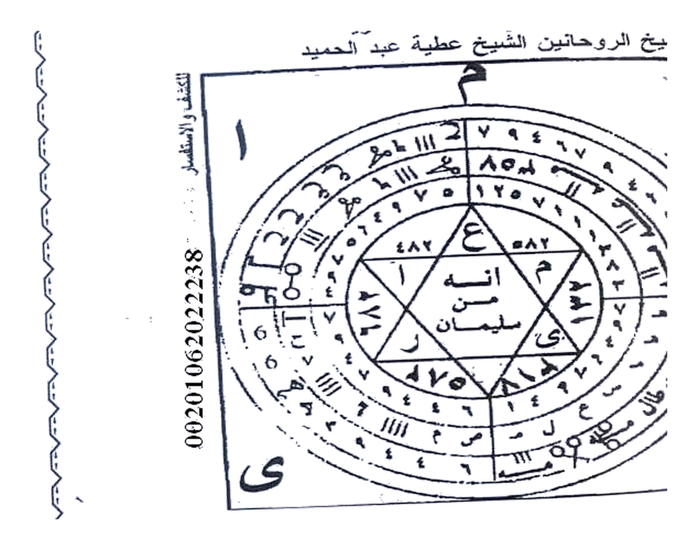
Rajah 1 (atas) — jadwal ar-ruʾūs al-arbaʿah (hlm. 206)
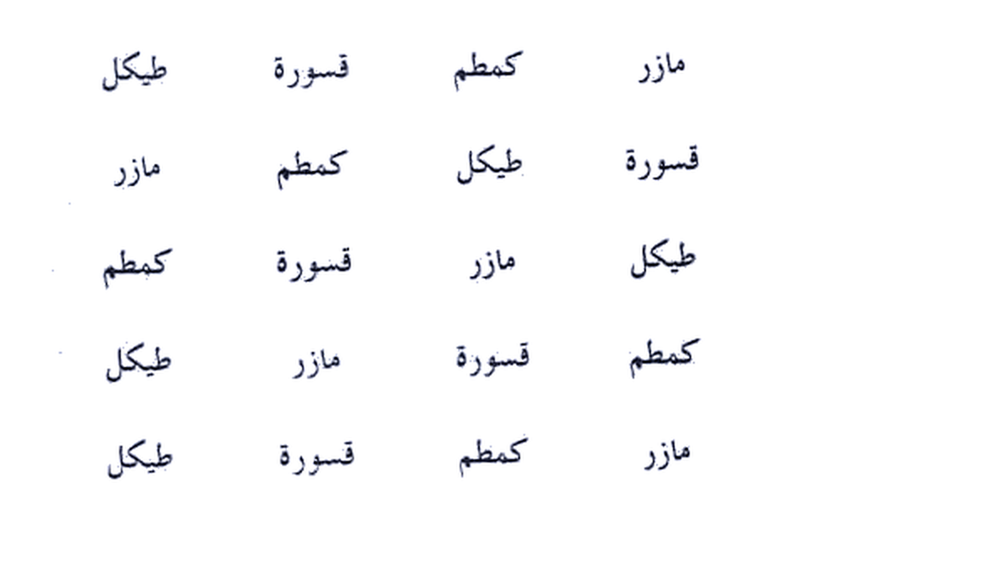
Rajah 2 (bawah) — wafak Qasūrah (hlm. 206)
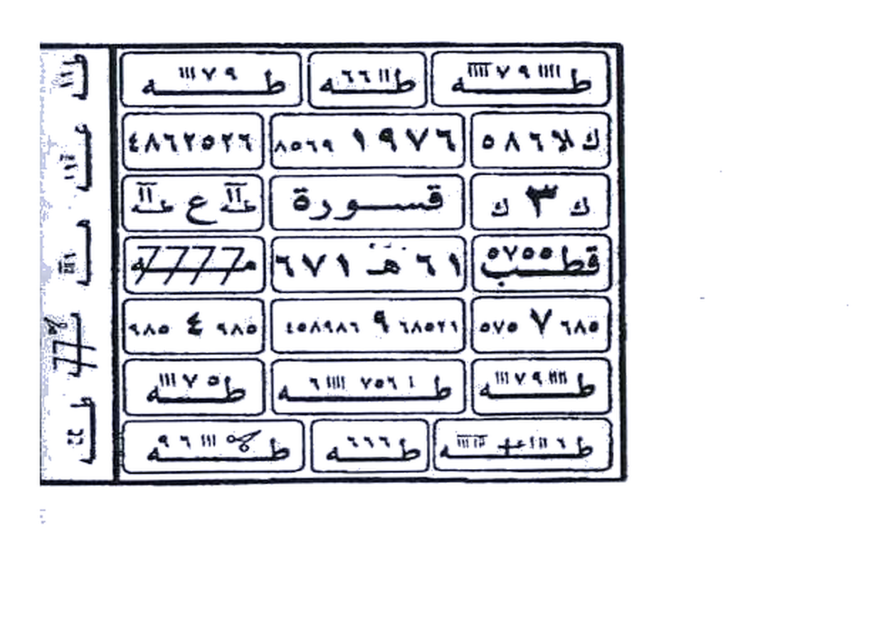
ʿAzīmah al-Ablūqiyyah al-ḥārrah rumus ditahan
Hlm. 208–209. Naskah menyebut puasa tiga hari, daʿwah tujuh kali tiap fardu, bakhoor, lalu “qasam al-ʿawālim al-arḍiyyah” atas arwāḥ gunung, gua, angin, dan “awlād Iblīs”. Itu qosam, bukan doa. Tidak kami turunkan langkahnya.

Hlm. 208–209. Kanan: penutup daʿwah lalu ʿazīmah al-Ablūqiyyah. Kiri: qasam ʿawālim arḍiyyah.
Fasal V Faedah mandil (hlm. 213–228)
الفصل الخامس في فوائد المندل وكيفية عمله
Mandil dalam istilah hikmah ialah kashf: menyuruh “penjaga” tampak di kening, cermin, atau bejana berminyak. Hlm. 214 judul fasal; hlm. 215 “mandil yang terbuka atas orang-orang besar” dengan khātam empat sudut dan titik di tengah.

Hlm. 214–215. Awal fasal mandil dan khātam empat sudut.

Hlm. 218–219. Mandil ʿAbd ar-Raḥīm al-Qinnāwī (cermin) dan mandil nafsī (minyak zaitun di telapak).
Ṭilasm al-kashf pada ṭāsah tembaga
Hlm. 222: kotak berhuruf dengan lingkaran di tengah, baris “Syamakhāʾīl” di atasnya. Naskah menyuruh susu kambing dalam ṭāsah tembaga, kain putih sebagai ṭilasm kashf diikat di kening di bawah surban, dan empat salinan dilekatkan ke empat dinding kamar. Itu istinzāl. Rajahnya ditampilkan; azimah panggilan tidak kami turunkan. Di tepi rajah naskah menyuruh membaca al-Fātiḥah, Āyat al-Kursī, Yāsīn, an-Naṣr, al-Ikhlāṣ, al-Muʿawwidhatayn — masing-masing tujuh kali. Ayat itu doa; mandilnya bukan.
Rajah — ṭilasm kashf, kotak berlingkaran (hlm. 222)
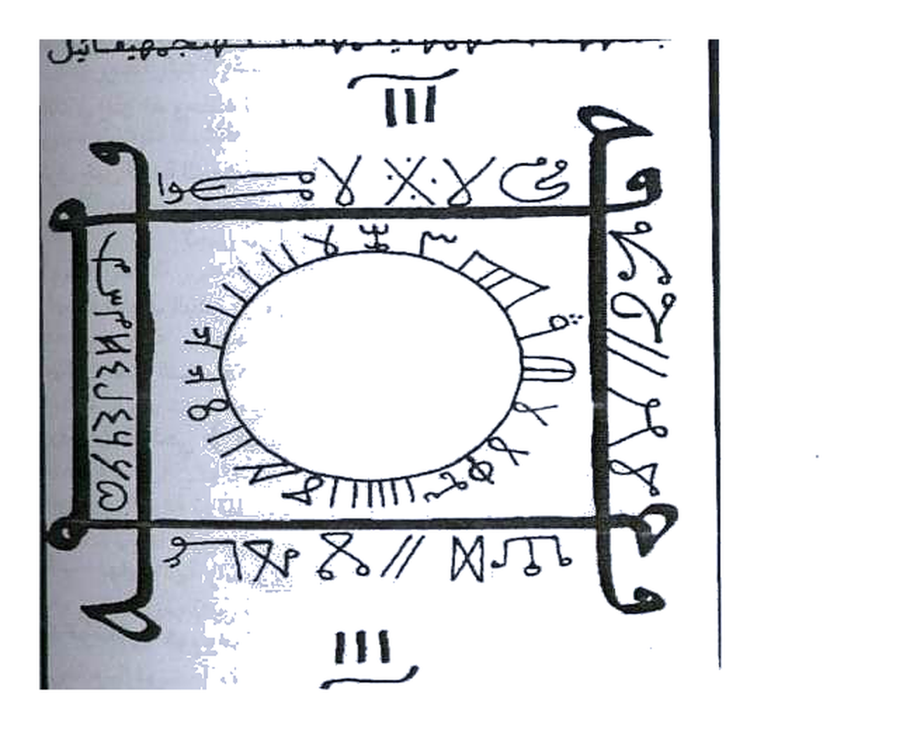
Rajah — khātam bintang delapan «al-muwaffaq» (hlm. 228)
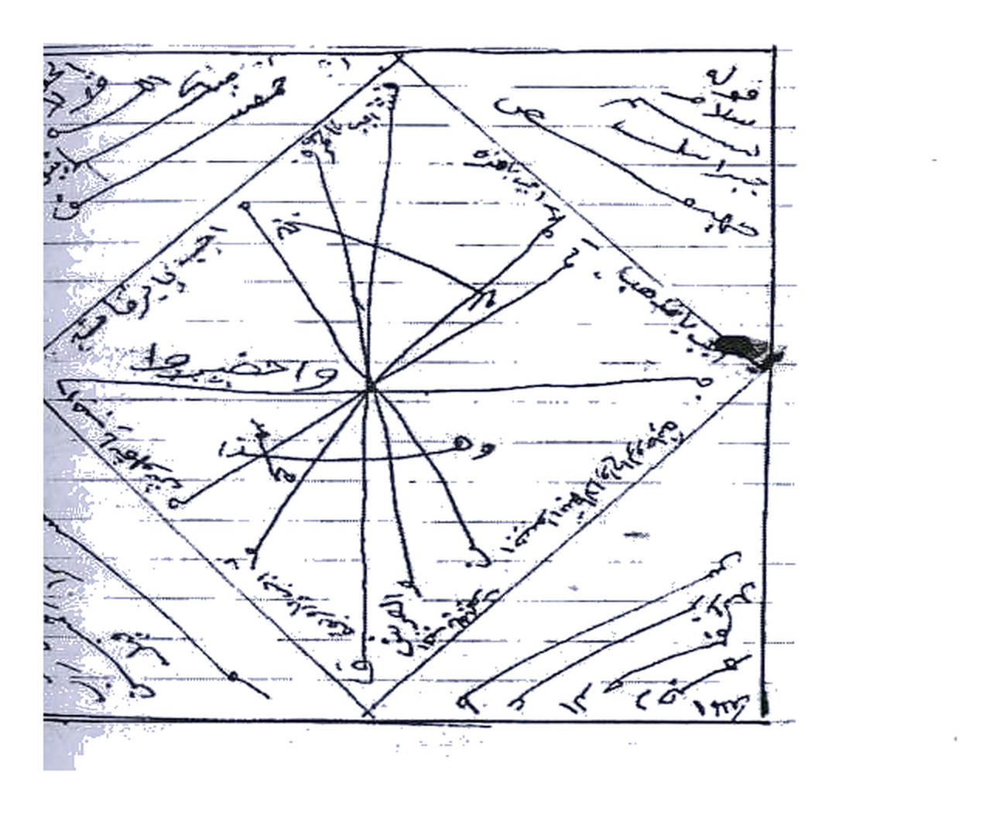
Naskah menyuruh memanggil “khadam” agar berbicara. Itu istinzāl. Kami tampilkan rajahnya, tidak menuliskan azimah panggilannya sebagai amalan.
Fasal VI Pelanggan, nikah, dan ʿukūs (hlm. 229–238)
الفصل السادس في جلب الزبون وزواج البائر وفك العكوسات
Hlm. 234 judul: ṭilasm li-jalb az-zabūn wa zawāj al-bint al-bāʾir — menarik pelanggan dan menikahkan gadis yang belum laku. Ditulis pada harir hijau, bakhoor ʿūd dan lubān, digantung di toko. Naskah menyambung ayat Zakariyyā–Maryam dan “yā Abā Yūsuf khādim as-sūrah”. Itu jalb. Tidak kami turunkan sebagai amalan. Hlm. 235 memuat rajah tiga belah ketupat bertumpuk (huruf + angka) dan “fāʾidah li-zawāj baʿd rafḍ ahl al-ahl”.
Rajah — tiga belah ketupat (hlm. 235)
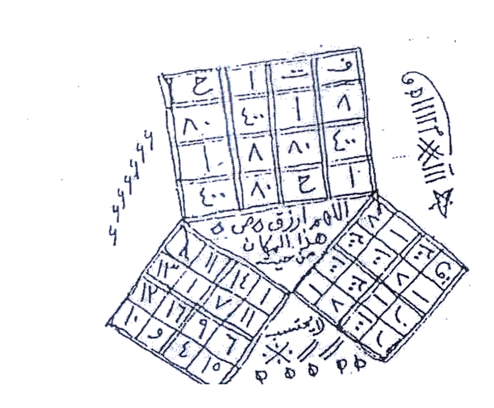
Hlm. 238: “fāʾidah li-qaḍāʾ al-ḥājah” — khātam dan ṭilasm, satu dibawa, satu dibuang ke air mengalir. Di tengah rajah tertulis doa: رب أنت مسني الضر وأنت أرحم الراحمين (ayat Ayyūb). Itu ayat; membacanya sebagai doa sah.

Hlm. 238–239. Kanan: khātam qaḍāʾ al-ḥājah (ayat Ayyūb di pusat). Kiri: rajah lingkaran-kotak; fāʾidah taḥbīr.
Fasal VII Mengirim hātif (hlm. 239–251)
الفصل السابع في أعمال إرسال هواتف
Hātif = bisikan/utusan ghaib. Naskah hlm. 248–249 memuat beberapa jenis:
- Irsāl bi at-taʿdhīb wa aḍ-ḍarb — menyiksa jin yang menempel, atau mengirim pukulan kepada “orang zalim”.
- Irsāl li-yatasarruf al-ifsād — “bertasarruf pada kerusakan”.
- Irsāl liẓ-ẓālim — naskah sendiri membatasi “hanya bagi zalim yang memusuhi”; tetap irsal.
- Irsāl Maymūn ibn Salīṭ — boneka kertas merah, digantung terbalik, dibakar.
- Irsāl hātif al-basmalah — huruf-huruf basmalah dipotong-potong.

Hlm. 248–249. Kanan: wafak angka irsal taʿdhīb. Kiri: irsal liẓ-ẓālim, Maymūn ibn Salīṭ, hātif basmalah.
Fasal VIII Awfāq (hlm. 252–291)
الفصل الثامن في الأوفاق
Inilah fasal yang paling dekat kepada ilmu huruf. Beberapa wafak bersandar pada ayat. Hlm. 254 membuka: “aqwā al-awfāq li-jalb al-ḥaẓẓ wa al-khayrāt wa kasr an-naḥs wa dafʿ al-muḍirrāt” — hisāb jasad, rūḥ, dam, nafs, ʿaql, lalu jadwal tartīb / tahdhīb / muwāṣalah / natījah.
Pembuka fasal — wafq mubārak 4×4
Hlm. 255: kotak empat baris (angka 13xxx–22xxx). Naskah menyuruh menulis Sabtu jam keenam dengan zaʿfarān, air mawar, misk, pada piring porselen tanpa dibasahi, nama malaikat di sekeliling, lalu menggantung kertas pada sībībah delima. Kayfiyyah “oles wajah 1897 kali” dan “bacakan Surah al-Jinn 53 kali” tidak kami jadikan petunjuk. Doa tepi yang berulang: بسم الله الرحمن الرحيم إنه لذو حظ عظيم (an-Naml: 16, tentang Sulaymān) — ayat; membacanya sebagai zikir sah.
Rajah — al-wafq al-mubārak 4×4 (hlm. 255)
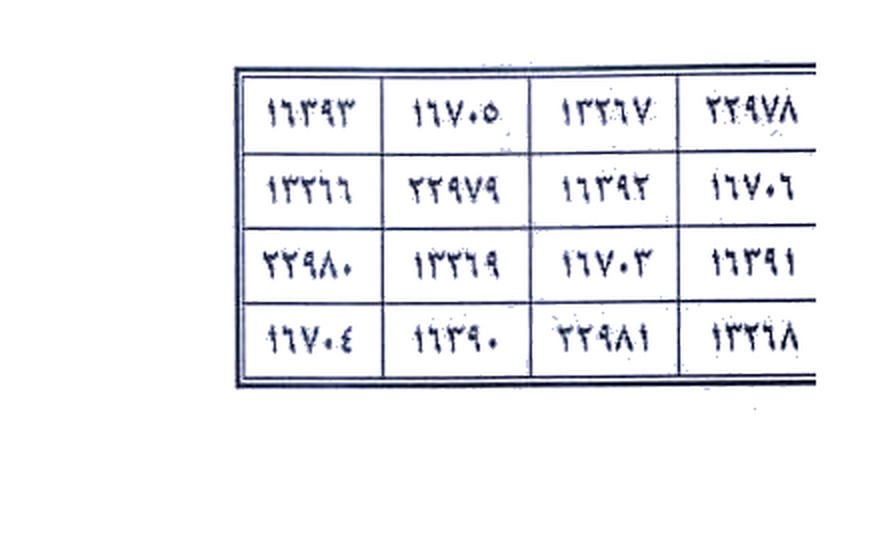
Al-wafq al-mubārak ayat
Hlm. 258: kotak 4×4 bernomor 3563–3582, nama Jibrīl di tepi. Lalu al-wafq as-Suhrawardī untuk kashf dan “penerangan bashīrah”: ditulis Jumat jam 9 pagi, digantung pada sībībah delima, ism dibaca 2729 kali, ayat dan doa 7 kali, dimandikan. Wirid harian: istigfar 100, ism 100, ayat 313.
اللَّهُ نُورُ السَّمَاوَاتِ وَالْأَرْضِ ۚ مَثَلُ نُورِهِ كَمِشْكَاةٍ فِيهَا مِصْبَاحٌ
“Allah adalah cahaya langit dan bumi. Perumpamaan cahaya-Nya seperti misykat yang di dalamnya ada pelita.” (An-Nūr: 35) — dibaca naskah sebagai wirid wafak ini.
Rajah 1 (atas / hlm. 258) — wafq mubārak + nama malaikat
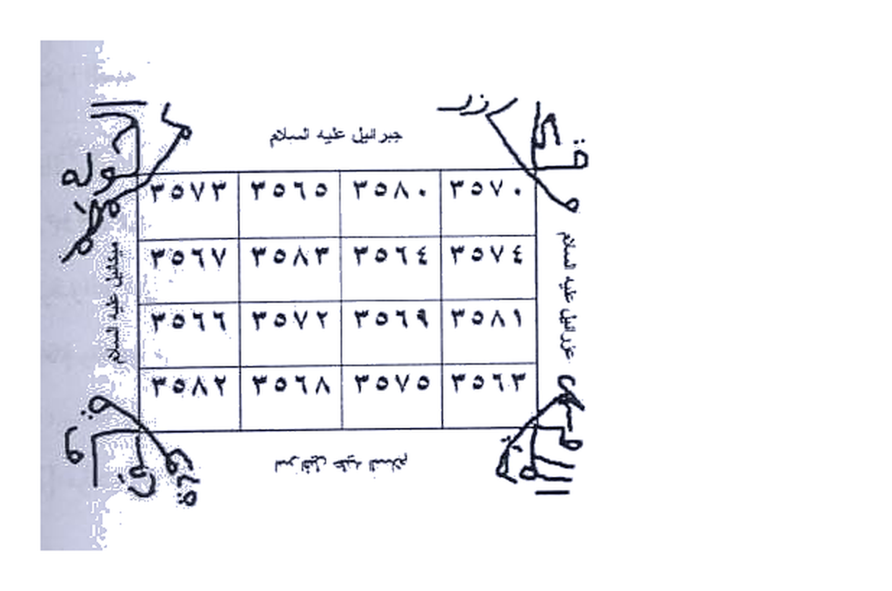
Rajah 2 (bawah / hlm. 259) — wafq «anzalnā nūran»
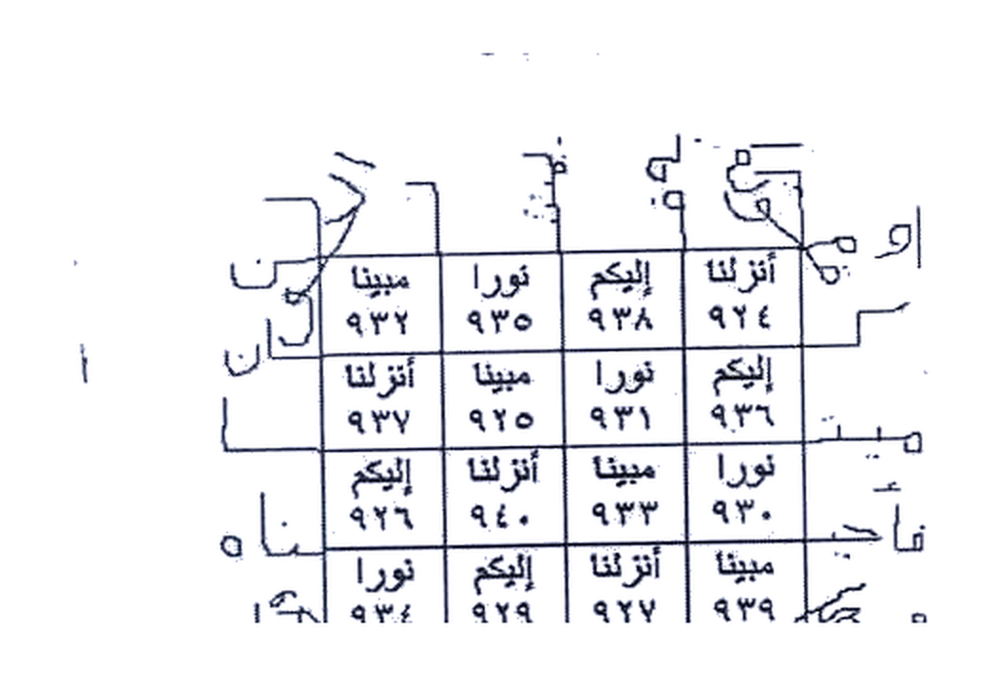
Cara taʿmīr (mengisi) wafak — hlm. 278
Naskah mengajar nuzūl: rumah 1 = miftāḥ 363; tiap rumah berikutnya = rumah sebelumnya + aṣl 265, dengan sisipan 628265 pada rumah 3 dan 6. Hasil 3×3:
| 1158 | 2483 | 628 |
| 893 | 1423 | 1653 |
| 2218 | 363 | 1888 |
Ini ilmu ʿadad. Doa di sekelilingnya: اللهم عطف قلب كذا إلى كذا — kami tidak mengisi “fulan ke fulanah”.
Mazmūr al-mubārak dan “jangan menzalimi istri”
Hlm. 279 menukil mazmūr (gaya zabūr): “Sabbihū ar-rabb…” lalu tawkīl agar suami pemegang kertas ini tidak menzalimi istrinya, dan supaya ada maḥabbah, mawaddah, dan wifāq antara keduanya. Ini arah ḥalāl — melindungi yang dizalimi — asal tidak dipaksa kepada orang luar.
Rajah — hasil taʿmīr 3×3 (hlm. 278)
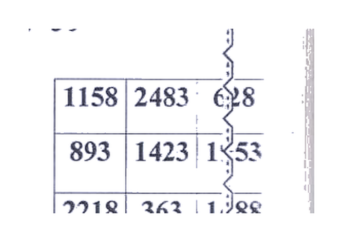
Pembaca Naskah asli, lembar demi lembar
Geser untuk melihat seluruh lembar ekstrak (Picture 001–149). Hamparan dua halaman naskah. Ini foto naskah, bukan terjemah rumus.
Lampiran Ilmu huruf — yang tidak menyakiti
Wafak 3×3 pada hlm. 7 naskah adalah kotak Budūḥ klasik (asas 15). Itu ilmu ʿadad, bukan azimah menyakiti. Kami ulang di sini dengan angka yang benar.
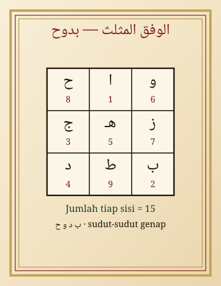
Lampiran — wafak mutsallats Budūḥ, jumlah tiap sisi 15.
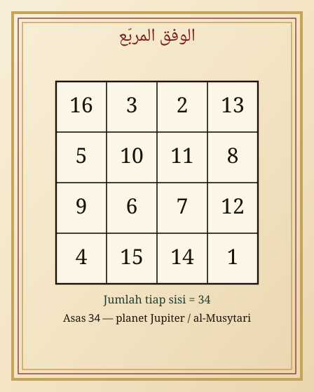
Lampiran — murabbaʿ asas 34.
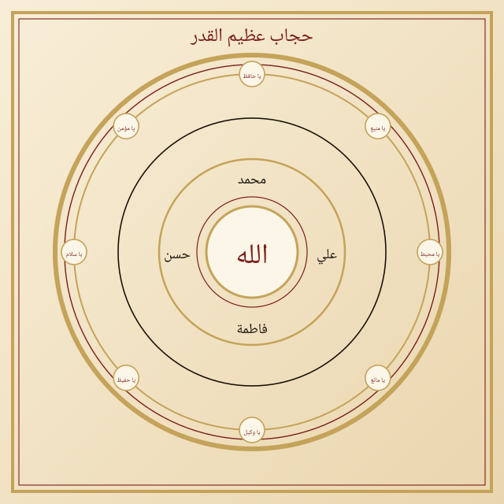
Lampiran — hijāb asma Ḥāfiẓ / Wakīl, bukan azimah jalb.
Hisāb jummal lafaz Jalālah = 66. Orang yang ingin “mahabbah” yang halal mencukupkan diri dengan akhlak, hak suami-istri, dan ayat وَجَعَلَ بَيْنَكُم مَّوَدَّةً وَرَحْمَةً — bukan abu rajah dalam makanan.
Penutup Khātimah
Naskah ini, dari sampul sampai fihris hlm. 296, adalah kumpulan delapan fasal: mahabbah–jalb–tahyīj, taṣrīf, ṭilasm, daʿwah kubrā, mandil, zabūn, irsāl hātif, dan awfāq. Terjemah judul dan rajah sudah diletakkan. Rumus yang merampas tidur, makanan, akal, perjalanan, nikah, atau nyawa orang tidak kami jadikan kitab petunjuk.
وَلَا يَحِيقُ الْمَكْرُ السَّيِّئُ إِلَّا بِأَهْلِهِ
“Tipu daya yang jahat itu tidak akan menimpa selain orang yang merencanakannya sendiri.” (Fāṭir: 43)
Yang kami turunkan lebih penuh dari fasal VIII: wafq mubārak, ayat an-Nūr, rumus taʿmīr ʿadad, dan tawkīl agar suami tidak menzalimi istri.
Berkas Unduh untuk dikoreksi
Paket ZIP berisi edisi ini (HTML, gaya, rajah, dan foto naskah).
Buka di komputer, sunting index.html, lalu kirim balik hasil koreksi.